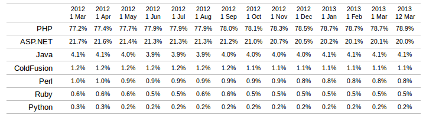

Beto Arancibia, @betoscopio
... y cómo Drupal está ayudando a ello.
Beto Arancibia, Drupal Summit Latino, Loja, Ecuador, 14/03/2013PHP es usado por casi el 80% de los sitios con lenguages de lado de servidor.
 Uso de PHPComposer is not a package manager. Yes, it deals with "packages" or libraries, but it manages them on a per-project basis, installing them in a directory (e.g. vendor) inside your project.
Composer website
composer.json
$ composer installEncargate de hacer solo una tarea, ... pero hazla bien.
This is the Unix philosophy: Write programs that do one thing and do it well. Write programs to work together. Write programs to handle text streams, because that is a universal interface.
Doug McIlroy
The Unix Philosophy Larry Garfield
Larry Garfield
¿Para qué?